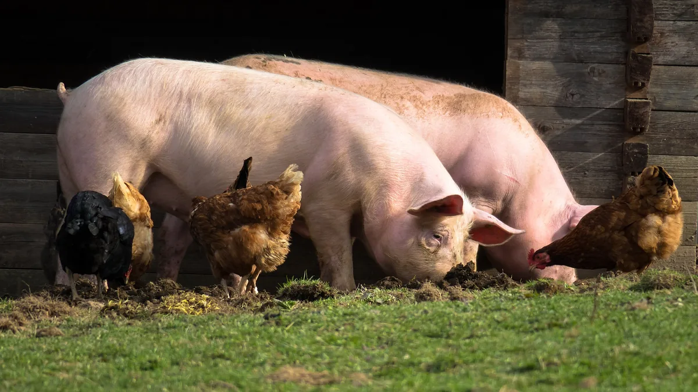

Der Hof
Artgerechte Tierhaltung

Rinder
Bei uns auf dem Mutschenhof beherbergen wir eine zurzeit 24-köpfige Rinderherde der Rasse Blonde d’Aquitaine, die wir ,,Mutschen’’ (lehdscher Mundart) nennen . Die Herde beweidet von Frühling bis Herbst die Spreewaldwiesen und stehen im Winter auf der Koppel auf dem Hofgelände. In dieser Zeit bekommen sie ausschließlich gutes eigenes Heu und Silage gefüttert und zwischendurch den ein oder anderen Apfel zu gesteckt. Dieser Umzug ist aufgrund des bereits genannten Winterstaus notwendig (siehe biologische Landwirtschaft), denn auf den nassen Weiden können die Rinder nicht stehen bleiben. Da wir die Rinder nicht zum Hof schwimmen lassen können, werden sie in dreier Gruppen mit dem Kahn zum Hof gefahren, wo sie dann bis zum Frühling auf der Koppel stehen. Diese ganze Prozedur kann gerne einmal einen ganzen Tag in Anspruch nehmen, aber es macht die Arbeit als Landwirt/in zu einem Erlebnis und den Mutschenhof zu etwas ganz Besonderem.
Mutterkühe und Bullen werden dabei stets getrennt gehalten – nur im Frühling darf der größte Bulle die Damen beglücken und schenkt uns regelmäßig Nachwuchs, der vor allen Dingen die Herzen der Feriengäste höherschlagen lässt.
Die Rinder wachsen bei uns in Mutterkuhhaltung auf und dürfen bei uns auch ihre Hörner behalten. Etwas, das nur noch selten in Betrieben genutzt wird, uns aber sehr am Herzen liegt. Die Hörner dienen den Tieren zum einen als Kommunikation. Kleine Bewegungen mit dem Kopf reichen oft schon aus, um Distanz zu schaffen, wohingegen hornlose Kühe meist den direkten Körperkontakt brauchen – was zu einer deutlich höheren Verletzungsgefahr führen kann. Außerdem sollen Hörner sich positiv auf Verdauung und Temperaturregulierung auswirken. Früher sagte man zudem, dass die Hufe der Rinder ihre Verbindung zur Erde und die Hörner zum Himmel wären. Die freie und naturverbundene Haltung bietet eine wesensgerechte und gesunde Entfaltung der Rinder. Sodass unsere Kälbchen ganz ohne Medikamente auskommen, weil gute Muttermilch und ein harmonischer Herdenverband alles ist, was sie brauchen, um groß und stark zu werden.

Schweine
Auch die Schweine dürfen in der warmen Jahreszeit draußen im Freilauf die Sonne genießen und kommen nur im Herbst/Winter in den Stall, wo sie dann geschlachtet werden. Morgens und abends dürfen sie neben Getreide aus der Region gedämpfte Kartoffeln vom eigenen Acker genießen, wobei sie im Sommer auch gerne die ein oder andere Zucchini aus dem Garten mit ihnen geteilt wird.

Hühner
Unsere Hühner sind eine aufgewegte Bande, die von mittags bis abends den Hof unsicher machen und fleißig für uns Eier legen. Gefüttert werden sie mit gutem Getreide und Sonnenblumenkernen, obwohl sie gerne auch mal einen Ausflug in den Bauerngarten machen, um ein paar Himbeeren zu stibitzen.
